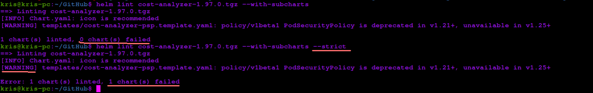
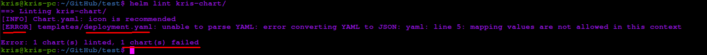

Validating Quality of Helm Charts With Helm Lint
Linting tools, aka linters, can help you write better and cleaner code early in the software development lifecycle. Linter is a tool that scans existing and new code for potential errors, bad and insecure patterns and violations of the respective programming language best practices. In most cases you can install a linter as an IDE extension so that you can get notified about potential issues during local development, long before the code is checked in to your source code base.
Most of us are familiar with using linters for application code but can we also use linters for Helm Charts? - Yes, we can and we should! 😼
In Helm CLI there’s a built-in command that you can use for this purpose: helm lint. Linting Helm Charts with helm lint can help you ensure that the deployment charts you create are:
- well-formed and can be successfully deployed,
- don’t use deprecated Kubernetes APIs,
- use well-formed and properly implemented dependencies, values and templates
Another advantage of using helm lint command is utilizing what you already have, i.e. it doesn’t require you to introduce an additional third-party tool in your supply chain. Of course, not all the use cases may be covered by this functionality, but, in my opinion, it provides quite a good foundational quality check for the Helm Charts which is absolutely worth giving a try.
I wasn’t able to find user-friendly documentation for the rules that helm lint command validates towards, but if you’re nevertheless interested in checking out which rules are being covered by this functionality, you can check out lint folder in source code for Helm project on GitHub - there you can also find test data that’s being used to validate that helm lint command works as expected: helm/helm - lint rules
Now, let’s see helm lint in action!😺 First, you need to provide a path to the Helm Chart artifacts to the command - both packaged format (.tgz) and pure source files folder destinations are supported. If you want to lint an external Helm Chart you can pull it from the Helm Chart repo first, as we do in the example below.
A few other flags to make a note of:
--strictwill make the command fail also in case warnings are discovered;--with-subchartswill also lint subcharts if a Helm Chart is using those (which will not happen by default);
Let’s lint an external Helm Chart - in my case, I’ve chosen kubecost Helm Chart. As mentioned above, first I will need to pull the chart from the kubecost Helm repo and only then I can lint it. I will also enable linting of subcharts because a third-party Helm Chart can potentially use those.
helm repo add kubecost https://kubecost.github.io/cost-analyzer/
helm pull kubecost/cost-analyzer -d .
helm lint cost-analyzer-1.97.0.tgz --with-subcharts
helm lint cost-analyzer-1.97.0.tgz --with-subcharts --strict # make the command fail if any warnings/errors are discovered
As you can see in the screenshot below, a few violations were discovered: one is more of a best practice recommendation to provide icon information in Chart.yaml file. Second item is a warning related to a deprecated Kubernetes API being used as part of the Helm Chart - in this case it’s related to PodSecurityPolicy resource. With --strict flag enabled we can also see that the command will actually fail because a warning has been discovered. In the default behaviour this command only fails when errors are discovered.

Now, let’s create a simple Helm Chart with helm create, change indentation in deployment.yaml file and see what will happen if we now run the helm lint command:
# deployment.yaml
apiVersion: apps/v1
kind: Deployment
metadata:
name: {{ include "kris-chart.fullname" . }} # this indentation is WRONG!
labels:
{{- include "kris-chart.labels" . | nindent 4 }}
spec:
# REST OF THE CODE IS OMITTED
helm create kris-chart
helm lint ./kris-chart/
As you can see in the screenshot below, linting fails with en error related to YAML parsing issues in the file we’ve recently updated - those who have worked with YAML know how much headache indentation can cause you 😁

You can also implement linting of Helm Charts with helm lint as part of CI/CD pipeline:
- In Azure DevOps:
- task: HelmDeploy@0
displayName: Lint Helm chart for best practices compatibility
inputs:
command: lint
arguments: '[PATH_TO_HELM_CHART] ---with-subcharts --strict'
- In GitHub Workflow:
- name: Lint Helm chart for best practices compatibility
run: |
helm lint [PATH_TO_HELM_CHART] --with-subcharts --strict
If you want to learn more, you can also check this article: Helm Lint
Custom rules are unfortunately not currently supported by helm lint, but if you require this functionality you can check out a third-party tool called chart-testing: chart-testing
Thanks for reading and till next tech tip! 😻